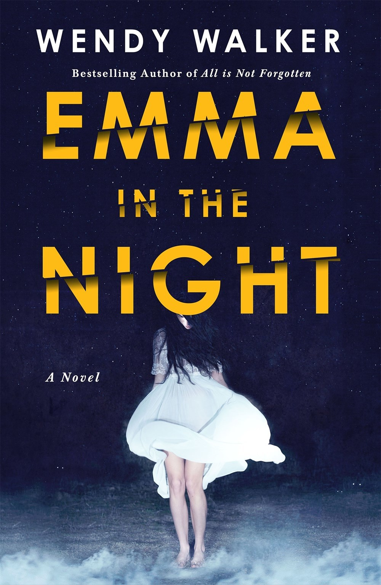
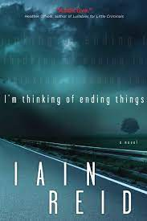

One night, three years ago, the Tanner sisters disappeared: fifteen-year-old
Cass and seventeem-year-old Emma. Cass returns, but without her sister, Emma.
Cass tells her story of a mysterious island, where she and her sister were
held. But to forensic psychiatrist Dr. Abby Winter, there's something missing.
She investigates the sisters' disappearance and their dysfunctioncal family.
She uncovers the depths of Cass' family, her narcissistic mother, and
her far-from-normal childhood. As the story unfolds, perhaps Cass' return is only
the beginning of the crime.

I’m thinking of ending things. Once this thought arrives, it stays. It sticks. It lingers. It’s always there. Always.
The novel is about a young woman who has many doubts about her relationship with her boyfriend but nevertheless takes a road trip
with her boyfriend to meet his parents.
The nameless young woman referred to as "the Girlfriend" of Jake, a guy suffering from a major mental condition, is the subject of
a psychological thriller novel by Canadian novelist Iain Reid. The Girlfriend agrees to accompany her lover to his parents' farm, which
sets off a chain of unpleasant occurrences. The story is told in the form of a diary written by Jake as he recalls the events of the trip;
as the story goes, it becomes evident that Jake has altered the reality of the trip and his connection.

It is the story of a teenage girl who, after being murdered, watches from her personal Heaven as
her family and friends struggle to move on with their lives while she comes to terms with her own death.
The story starts revolves around Susie Salmon, who is adjusting to her new home in heaven, which is nothing
like she imagined, while watching life on earth go on without her — her friends and family learning to live
without her, and uncover what happened at the same time.